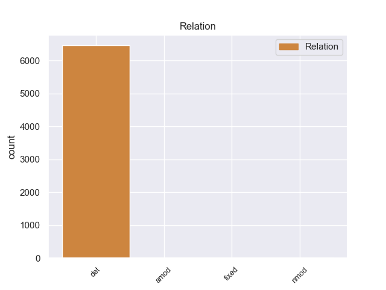

Distribution of features within this leaf

Morphosyntax Rules sorted by frequency.
- When the dependent token is the determiner(det) of the head token, and the head token is NOUN and the dependent token is DET, the Number needs to be Sing.
1 Αυτό _ _ _ _ 0 _ _ _
2 μπορεί _ _ _ _ 0 _ _ _
3 να _ _ _ _ 0 _ _ _
4 μην _ _ _ _ 0 _ _ _
5 οδηγήσει _ _ _ _ 0 _ _ _
6 σ _ _ _ _ 0 _ _ _
7 τη _ _ _ _ 0 _ _ _
8 λήξη _ _ _ _ 0 _ _ _
9 του _ _ _ _ 0 _ _ _
10 εν _ _ _ _ 0 _ _ _
11 λόγω _ _ _ _ 0 _ _ _
12 ζητήματος _ _ _ _ 0 _ _ _
13 αλλά _ _ _ _ 0 _ _ _
14 , _ _ _ _ 0 _ _ _
15 σ _ _ _ _ 0 _ _ _
16 τη _ _ _ _ 0 _ _ _
17 μορφή _ _ _ _ 0 _ _ _
18 υπό _ _ _ _ 0 _ _ _
19 την _ _ _ _ 0 _ _ _
20 οποία _ _ _ _ 0 _ _ _
21 την _ _ _ _ 0 _ _ _
22 λάβαμε _ _ _ _ 0 _ _ _
23 , _ _ _ _ 0 _ _ _
24 αυτή _ _ _ _ 0 _ _ _
25 η _ _ _ _ 0 _ _ _
26 αίτηση _ _ _ _ 0 _ _ _
27 άρσης _ _ _ _ 0 _ _ _
28 της _ _ _ _ 0 _ _ _
29 ασυλίας _ _ _ _ 0 _ _ _
30 ήταν _ _ _ _ 0 _ _ _
31 , _ _ _ _ 0 _ _ _
32 κατά _ _ _ _ 0 _ _ _
33 την _ _ _ _ 0 _ _ _
34 άποψη _ _ _ _ 0 _ _ _
35 της _ _ _ _ 0 _ _ _
36 Επιτροπής _ _ _ _ 0 _ _ _
37 Νομικών _ _ _ _ 0 _ _ _
38 Θεμάτων _ _ _ _ 0 _ _ _
39 , _ _ _ _ 0 _ _ _
40 απαράδεκτη _ _ _ _ 0 _ _ _
41 , _ _ _ _ 0 _ _ _
42 άποψη _ _ _ _ 0 _ _ _
43 την _ _ _ _ 0 _ _ _
44 οποία _ _ _ _ 0 _ _ _
45 συνιστώ _ _ _ _ 0 _ _ _
46 σ _ _ _ _ 0 _ _ _
47 το ο DET AtDf Case=Acc|Gender=Neut|Number=Sing 48 det _ _
48 Σώμα σώμα NOUN NOUN Case=Acc|Gender=Neut|Number=Sing 0 _ _ _
49 να _ _ _ _ 0 _ _ _
50 υιοθετήσει _ _ _ _ 0 _ _ _
51 . _ _ _ _ 0 _ _ _
1 Αυτό _ _ _ _ 0 _ _ _
2 μπορεί _ _ _ _ 0 _ _ _
3 να _ _ _ _ 0 _ _ _
4 μην _ _ _ _ 0 _ _ _
5 οδηγήσει _ _ _ _ 0 _ _ _
6 σ _ _ _ _ 0 _ _ _
7 τη _ _ _ _ 0 _ _ _
8 λήξη _ _ _ _ 0 _ _ _
9 του _ _ _ _ 0 _ _ _
10 εν _ _ _ _ 0 _ _ _
11 λόγω _ _ _ _ 0 _ _ _
12 ζητήματος _ _ _ _ 0 _ _ _
13 αλλά _ _ _ _ 0 _ _ _
14 , _ _ _ _ 0 _ _ _
15 σ _ _ _ _ 0 _ _ _
16 τη _ _ _ _ 0 _ _ _
17 μορφή _ _ _ _ 0 _ _ _
18 υπό _ _ _ _ 0 _ _ _
19 την _ _ _ _ 0 _ _ _
20 οποία _ _ _ _ 0 _ _ _
21 την _ _ _ _ 0 _ _ _
22 λάβαμε _ _ _ _ 0 _ _ _
23 , _ _ _ _ 0 _ _ _
24 αυτή _ _ _ _ 0 _ _ _
25 η _ _ _ _ 0 _ _ _
26 αίτηση _ _ _ _ 0 _ _ _
27 άρσης _ _ _ _ 0 _ _ _
28 της _ _ _ _ 0 _ _ _
29 ασυλίας _ _ _ _ 0 _ _ _
30 ήταν _ _ _ _ 0 _ _ _
31 , _ _ _ _ 0 _ _ _
32 κατά _ _ _ _ 0 _ _ _
33 την _ _ _ _ 0 _ _ _
34 άποψη _ _ _ _ 0 _ _ _
35 της _ _ _ _ 0 _ _ _
36 Επιτροπής _ _ _ _ 0 _ _ _
37 Νομικών _ _ _ _ 0 _ _ _
38 Θεμάτων _ _ _ _ 0 _ _ _
39 , _ _ _ _ 0 _ _ _
40 απαράδεκτη _ _ _ _ 0 _ _ _
41 , _ _ _ _ 0 _ _ _
42 άποψη _ _ _ _ 0 _ _ _
43 την ο DET DET Case=Acc|Definite=Def|Gender=Fem|Number=Sing|PronType=Art 44 det _ _
44 οποία οποίος PRON PRON Case=Acc|Gender=Fem|Number=Sing|Person=3|PronType=Rel 0 _ _ _
45 συνιστώ _ _ _ _ 0 _ _ _
46 σ _ _ _ _ 0 _ _ _
47 το _ _ _ _ 0 _ _ _
48 Σώμα _ _ _ _ 0 _ _ _
49 να _ _ _ _ 0 _ _ _
50 υιοθετήσει _ _ _ _ 0 _ _ _
51 . _ _ _ _ 0 _ _ _
1 Με _ _ _ _ 0 _ _ _
2 αυτές _ _ _ _ 0 _ _ _
3 τις _ _ _ _ 0 _ _ _
4 κατηγορίες _ _ _ _ 0 _ _ _
5 , _ _ _ _ 0 _ _ _
6 από _ _ _ _ 0 _ _ _
7 τις _ _ _ _ 0 _ _ _
8 οποίες _ _ _ _ 0 _ _ _
9 η _ _ _ _ 0 _ _ _
10 πρώτη _ _ _ _ 0 _ _ _
11 αφορά _ _ _ _ 0 _ _ _
12 λαθρεμπόριο _ _ _ _ 0 _ _ _
13 όπλων _ _ _ _ 0 _ _ _
14 κλπ. _ _ _ _ 0 _ _ _
15 , _ _ _ _ 0 _ _ _
16 και _ _ _ _ 0 _ _ _
17 βαρύνει _ _ _ _ 0 _ _ _
18 τόσο _ _ _ _ 0 _ _ _
19 τον _ _ _ _ 0 _ _ _
20 κ. _ _ _ _ 0 _ _ _
21 Pasqua _ _ _ _ 0 _ _ _
22 όσο _ _ _ _ 0 _ _ _
23 και _ _ _ _ 0 _ _ _
24 τον _ _ _ _ 0 _ _ _
25 κ. _ _ _ _ 0 _ _ _
26 Marchiani _ _ _ _ 0 _ _ _
27 , _ _ _ _ 0 _ _ _
28 ενώ _ _ _ _ 0 _ _ _
29 η ο DET DET Case=Nom|Definite=Def|Gender=Fem|Number=Sing|PronType=Art 30 det _ _
30 δεύτερη δεύτερος NUM NUM Case=Nom|Gender=Fem|Number=Sing|NumType=Ord 0 _ _ _
31 στρέφεται _ _ _ _ 0 _ _ _
32 μόνον _ _ _ _ 0 _ _ _
33 εναντίον _ _ _ _ 0 _ _ _
34 του _ _ _ _ 0 _ _ _
35 κ. _ _ _ _ 0 _ _ _
36 Pasqua _ _ _ _ 0 _ _ _
37 , _ _ _ _ 0 _ _ _
38 οι _ _ _ _ 0 _ _ _
39 ανακριτές _ _ _ _ 0 _ _ _
40 δικαστές _ _ _ _ 0 _ _ _
41 ζητούν _ _ _ _ 0 _ _ _
42 την _ _ _ _ 0 _ _ _
43 άρση _ _ _ _ 0 _ _ _
44 της _ _ _ _ 0 _ _ _
45 βουλευτικής _ _ _ _ 0 _ _ _
46 ασυλίας _ _ _ _ 0 _ _ _
47 των _ _ _ _ 0 _ _ _
48 εν _ _ _ _ 0 _ _ _
49 λόγω _ _ _ _ 0 _ _ _
50 δύο _ _ _ _ 0 _ _ _
51 κυρίων _ _ _ _ 0 _ _ _
52 , _ _ _ _ 0 _ _ _
53 προκειμένου _ _ _ _ 0 _ _ _
54 να _ _ _ _ 0 _ _ _
55 τους _ _ _ _ 0 _ _ _
56 επιβληθούν _ _ _ _ 0 _ _ _
57 ορισμένα _ _ _ _ 0 _ _ _
58 μέτρα _ _ _ _ 0 _ _ _
59 δικαστικής _ _ _ _ 0 _ _ _
60 επιτήρησης _ _ _ _ 0 _ _ _
61 : _ _ _ _ 0 _ _ _
62 να _ _ _ _ 0 _ _ _
63 τους _ _ _ _ 0 _ _ _
64 απαγορευθεί _ _ _ _ 0 _ _ _
65 η _ _ _ _ 0 _ _ _
66 επαφή _ _ _ _ 0 _ _ _
67 με _ _ _ _ 0 _ _ _
68 διάφορους _ _ _ _ 0 _ _ _
69 μάρτυρες _ _ _ _ 0 _ _ _
70 ή _ _ _ _ 0 _ _ _
71 συγκατηγορουμένους _ _ _ _ 0 _ _ _
72 σ _ _ _ _ 0 _ _ _
73 τις _ _ _ _ 0 _ _ _
74 υποθέσεις _ _ _ _ 0 _ _ _
75 αυτές _ _ _ _ 0 _ _ _
76 και _ _ _ _ 0 _ _ _
77 η _ _ _ _ 0 _ _ _
78 μετάβαση _ _ _ _ 0 _ _ _
79 σε _ _ _ _ 0 _ _ _
80 διάφορες _ _ _ _ 0 _ _ _
81 χώρες _ _ _ _ 0 _ _ _
82 , _ _ _ _ 0 _ _ _
83 καθώς _ _ _ _ 0 _ _ _
84 και _ _ _ _ 0 _ _ _
85 να _ _ _ _ 0 _ _ _
86 τους _ _ _ _ 0 _ _ _
87 επιβληθεί _ _ _ _ 0 _ _ _
88 ενδεχομένως _ _ _ _ 0 _ _ _
89 η _ _ _ _ 0 _ _ _
90 καταβολή _ _ _ _ 0 _ _ _
91 εγγύησης _ _ _ _ 0 _ _ _
92 . _ _ _ _ 0 _ _ _
1 πρόκειται _ _ _ _ 0 _ _ _
2 για _ _ _ _ 0 _ _ _
3 αυτό _ _ _ _ 0 _ _ _
4 το _ _ _ _ 0 _ _ _
5 οποίο _ _ _ _ 0 _ _ _
6 αποκαλύφθηκε _ _ _ _ 0 _ _ _
7 κατά _ _ _ _ 0 _ _ _
8 τη _ _ _ _ 0 _ _ _
9 διάρκεια _ _ _ _ 0 _ _ _
10 αυτής _ _ _ _ 0 _ _ _
11 της _ _ _ _ 0 _ _ _
12 διαδικασίας _ _ _ _ 0 _ _ _
13 , _ _ _ _ 0 _ _ _
14 ότι _ _ _ _ 0 _ _ _
15 ο _ _ _ _ 0 _ _ _
16 Εισαγγελέας _ _ _ _ 0 _ _ _
17 κάποια _ _ _ _ 0 _ _ _
18 στιγμή _ _ _ _ 0 _ _ _
19 ζήτησε _ _ _ _ 0 _ _ _
20 από _ _ _ _ 0 _ _ _
21 την _ _ _ _ 0 _ _ _
22 Πρόεδρο _ _ _ _ 0 _ _ _
23 του _ _ _ _ 0 _ _ _
24 Σώματος _ _ _ _ 0 _ _ _
25 , _ _ _ _ 0 _ _ _
26 την ο DET DET Case=Acc|Definite=Def|Gender=Fem|Number=Sing|PronType=Art 27 det _ _
27 προκάτοχό προκάτοχος ADJ ADJ Case=Acc|Gender=Fem|Number=Sing 0 _ _ _
28 σας _ _ _ _ 0 _ _ _
29 , _ _ _ _ 0 _ _ _
30 λεπτομέρειες _ _ _ _ 0 _ _ _
31 για _ _ _ _ 0 _ _ _
32 την _ _ _ _ 0 _ _ _
33 ψήφο _ _ _ _ 0 _ _ _
34 που _ _ _ _ 0 _ _ _
35 έχουν _ _ _ _ 0 _ _ _
36 δώσει _ _ _ _ 0 _ _ _
37 οι _ _ _ _ 0 _ _ _
38 δύο _ _ _ _ 0 _ _ _
39 συγκεκριμένοι _ _ _ _ 0 _ _ _
40 βουλευτές _ _ _ _ 0 _ _ _
41 προκειμένου _ _ _ _ 0 _ _ _
42 να _ _ _ _ 0 _ _ _
43 διευκρινιστεί _ _ _ _ 0 _ _ _
44 περαιτέρω _ _ _ _ 0 _ _ _
45 η _ _ _ _ 0 _ _ _
46 πιθανότητα _ _ _ _ 0 _ _ _
47 να _ _ _ _ 0 _ _ _
48 είχαν _ _ _ _ 0 _ _ _
49 ασκήσει _ _ _ _ 0 _ _ _
50 αθέμιτη _ _ _ _ 0 _ _ _
51 επιρροή _ _ _ _ 0 _ _ _
52 . _ _ _ _ 0 _ _ _
1 η _ _ _ _ 0 _ _ _
2 Ομάδα _ _ _ _ 0 _ _ _
3 μας _ _ _ _ 0 _ _ _
4 είναι _ _ _ _ 0 _ _ _
5 υπέρ _ _ _ _ 0 _ _ _
6 του ο DET DET Case=Gen|Definite=Def|Gender=Neut|Number=Sing|PronType=Art 8 det _ _
7 να _ _ _ _ 0 _ _ _
8 αποκτήσουμε αποκτώ VERB VERB Aspect=Perf|Mood=Ind|Number=Plur|Person=1|VerbForm=Fin|Voice=Act 0 _ _ _
9 καθεστώς _ _ _ _ 0 _ _ _
10 βουλευτών _ _ _ _ 0 _ _ _
11 . _ _ _ _ 0 _ _ _
1 Εν _ _ _ _ 0 _ _ _
2 τω ο DET DET Case=Dat|Definite=Def|Gender=Neut|Number=Sing|PronType=Art 3 det _ _
3 μεταξύ μεταξύ ADV ADV _ 0 _ _ _
4 είχε _ _ _ _ 0 _ _ _
5 ήδη _ _ _ _ 0 _ _ _
6 χρεωθεί _ _ _ _ 0 _ _ _
7 την _ _ _ _ 0 _ _ _
8 οδυνηρή _ _ _ _ 0 _ _ _
9 περιπέτεια _ _ _ _ 0 _ _ _
10 της _ _ _ _ 0 _ _ _
11 Μικρασιατικής _ _ _ _ 0 _ _ _
12 καταστροφής _ _ _ _ 0 _ _ _
13 που _ _ _ _ 0 _ _ _
14 εξυπηρετούσε _ _ _ _ 0 _ _ _
15 τα _ _ _ _ 0 _ _ _
16 σχέδια _ _ _ _ 0 _ _ _
17 των _ _ _ _ 0 _ _ _
18 Μεγάλων _ _ _ _ 0 _ _ _
19 Δυνάμεων _ _ _ _ 0 _ _ _
20 σ _ _ _ _ 0 _ _ _
21 την _ _ _ _ 0 _ _ _
22 περιοχή _ _ _ _ 0 _ _ _
23 και _ _ _ _ 0 _ _ _
24 βασίστηκε _ _ _ _ 0 _ _ _
25 σε _ _ _ _ 0 _ _ _
26 αβάσιμους _ _ _ _ 0 _ _ _
27 σχεδιασμούς _ _ _ _ 0 _ _ _
28 όπως _ _ _ _ 0 _ _ _
29 αυτοί _ _ _ _ 0 _ _ _
30 συνοψίζονταν _ _ _ _ 0 _ _ _
31 σ _ _ _ _ 0 _ _ _
32 το _ _ _ _ 0 _ _ _
33 δόγμα _ _ _ _ 0 _ _ _
34 " _ _ _ _ 0 _ _ _
35 Η _ _ _ _ 0 _ _ _
36 Ελλάς _ _ _ _ 0 _ _ _
37 των _ _ _ _ 0 _ _ _
38 δύο _ _ _ _ 0 _ _ _
39 ηπείρων _ _ _ _ 0 _ _ _
40 και _ _ _ _ 0 _ _ _
41 των _ _ _ _ 0 _ _ _
42 πέντε _ _ _ _ 0 _ _ _
43 θαλασσών _ _ _ _ 0 _ _ _
44 " _ _ _ _ 0 _ _ _
45 . _ _ _ _ 0 _ _ _
1 Κυρία _ _ _ _ 0 _ _ _
2 Πρόεδρε _ _ _ _ 0 _ _ _
3 , _ _ _ _ 0 _ _ _
4 πέρυσι _ _ _ _ 0 _ _ _
5 σ _ _ _ _ 0 _ _ _
6 τις _ _ _ _ 0 _ _ _
7 13_Δεκεμβρίου _ _ _ _ 0 _ _ _
8 , _ _ _ _ 0 _ _ _
9 εκδηλώθηκε _ _ _ _ 0 _ _ _
10 μια _ _ _ _ 0 _ _ _
11 άγρια _ _ _ _ 0 _ _ _
12 και _ _ _ _ 0 _ _ _
13 φρικιαστική _ _ _ _ 0 _ _ _
14 επίθεση _ _ _ _ 0 _ _ _
15 εναντίον _ _ _ _ 0 _ _ _
16 του _ _ _ _ 0 _ _ _
17 κοινοβουλίου _ _ _ _ 0 _ _ _
18 της _ _ _ _ 0 _ _ _
19 Ινδικής _ _ _ _ 0 _ _ _
20 Ένωσης _ _ _ _ 0 _ _ _
21 σ _ _ _ _ 0 _ _ _
22 το _ _ _ _ 0 _ _ _
23 Δελχί _ _ _ _ 0 _ _ _
24 , _ _ _ _ 0 _ _ _
25 το _ _ _ _ 0 _ _ _
26 οποίο _ _ _ _ 0 _ _ _
27 είναι _ _ _ _ 0 _ _ _
28 το ο DET DET Case=Nom|Definite=Def|Gender=Neut|Number=Sing|PronType=Art 31 amod _ _
29 πλέον _ _ _ _ 0 _ _ _
30 απτό _ _ _ _ 0 _ _ _
31 σύμβολο σύμβολο NOUN NOUN Case=Nom|Gender=Neut|Number=Sing 0 _ _ _
32 της _ _ _ _ 0 _ _ _
33 δημοκρατίας _ _ _ _ 0 _ _ _
34 και _ _ _ _ 0 _ _ _
35 του _ _ _ _ 0 _ _ _
36 κοσμικού _ _ _ _ 0 _ _ _
37 εθνικού _ _ _ _ 0 _ _ _
38 χαρακτήρα _ _ _ _ 0 _ _ _
39 αυτής _ _ _ _ 0 _ _ _
40 της _ _ _ _ 0 _ _ _
41 χώρας _ _ _ _ 0 _ _ _
42 . _ _ _ _ 0 _ _ _
1 Επίσης _ _ _ _ 0 _ _ _
2 μόνο _ _ _ _ 0 _ _ _
3 ένα ένας DET DET Case=Nom|Definite=Ind|Gender=Neut|Number=Sing|PronType=Art 4 amod _ _
4 30% 30% NUM NUM NumType=Card 0 _ _ _
5 πιστεύει _ _ _ _ 0 _ _ _
6 ότι _ _ _ _ 0 _ _ _
7 οι _ _ _ _ 0 _ _ _
8 περισσότεροι _ _ _ _ 0 _ _ _
9 Αφγανοί _ _ _ _ 0 _ _ _
10 στηρίζουν _ _ _ _ 0 _ _ _
11 τις _ _ _ _ 0 _ _ _
12 προσπάθειες _ _ _ _ 0 _ _ _
13 των _ _ _ _ 0 _ _ _
14 ΗΠΑ _ _ _ _ 0 _ _ _
15 σ _ _ _ _ 0 _ _ _
16 τη _ _ _ _ 0 _ _ _
17 χώρα _ _ _ _ 0 _ _ _
18 τους _ _ _ _ 0 _ _ _
19 . _ _ _ _ 0 _ _ _
1 Οι _ _ _ _ 0 _ _ _
2 δύο _ _ _ _ 0 _ _ _
3 προτάσεις _ _ _ _ 0 _ _ _
4 οδηγίας _ _ _ _ 0 _ _ _
5 σχετικά _ _ _ _ 0 _ _ _
6 με _ _ _ _ 0 _ _ _
7 τη _ _ _ _ 0 _ _ _
8 σύναψη _ _ _ _ 0 _ _ _
9 συμβάσεων _ _ _ _ 0 _ _ _
10 θα _ _ _ _ 0 _ _ _
11 πρέπει _ _ _ _ 0 _ _ _
12 επομένως _ _ _ _ 0 _ _ _
13 να _ _ _ _ 0 _ _ _
14 επιτρέψουν _ _ _ _ 0 _ _ _
15 σ _ _ _ _ 0 _ _ _
16 την _ _ _ _ 0 _ _ _
17 πρωτοβάθμια _ _ _ _ 0 _ _ _
18 και _ _ _ _ 0 _ _ _
19 δευτεροβάθμια _ _ _ _ 0 _ _ _
20 αυτοδιοίκηση _ _ _ _ 0 _ _ _
21 , _ _ _ _ 0 _ _ _
22 καθώς _ _ _ _ 0 _ _ _
23 και _ _ _ _ 0 _ _ _
24 σ _ _ _ _ 0 _ _ _
25 τις _ _ _ _ 0 _ _ _
26 κρατικές _ _ _ _ 0 _ _ _
27 αρχές _ _ _ _ 0 _ _ _
28 να _ _ _ _ 0 _ _ _
29 προμηθεύονται _ _ _ _ 0 _ _ _
30 αγαθά _ _ _ _ 0 _ _ _
31 και _ _ _ _ 0 _ _ _
32 υπηρεσίες _ _ _ _ 0 _ _ _
33 με _ _ _ _ 0 _ _ _
34 τέτοιο _ _ _ _ 0 _ _ _
35 τρόπο _ _ _ _ 0 _ _ _
36 ώστε _ _ _ _ 0 _ _ _
37 η _ _ _ _ 0 _ _ _
38 επιβάρυνση _ _ _ _ 0 _ _ _
39 σ _ _ _ _ 0 _ _ _
40 το _ _ _ _ 0 _ _ _
41 περιβάλλον _ _ _ _ 0 _ _ _
42 να _ _ _ _ 0 _ _ _
43 είναι _ _ _ _ 0 _ _ _
44 όσο όσο ADV ADV _ 0 _ _ _
45 το ο DET DET Case=Acc|Definite=Def|Gender=Neut|Number=Sing|PronType=Art 44 fixed _ _
46 δυνατόν _ _ _ _ 0 _ _ _
47 πιο _ _ _ _ 0 _ _ _
48 περιορισμένη _ _ _ _ 0 _ _ _
49 . _ _ _ _ 0 _ _ _
1 Τόσο _ _ _ _ 0 _ _ _
2 το _ _ _ _ 0 _ _ _
3 ζήτημα _ _ _ _ 0 _ _ _
4 της _ _ _ _ 0 _ _ _
5 ασυλίας _ _ _ _ 0 _ _ _
6 όσο _ _ _ _ 0 _ _ _
7 και _ _ _ _ 0 _ _ _
8 η _ _ _ _ 0 _ _ _
9 αίτηση _ _ _ _ 0 _ _ _
10 για _ _ _ _ 0 _ _ _
11 άρση _ _ _ _ 0 _ _ _
12 της _ _ _ _ 0 _ _ _
13 έχουν _ _ _ _ 0 _ _ _
14 σχέση _ _ _ _ 0 _ _ _
15 μόνο _ _ _ _ 0 _ _ _
16 με _ _ _ _ 0 _ _ _
17 το ο DET DET Case=Acc|Definite=Def|Gender=Neut|Number=Sing|PronType=Art 21 nmod _ _
18 εάν _ _ _ _ 0 _ _ _
19 το _ _ _ _ 0 _ _ _
20 Δικαστήριο _ _ _ _ 0 _ _ _
21 μπορεί μπορώ VERB VERB Aspect=Imp|Mood=Ind|Number=Sing|Person=3|Tense=Pres|VerbForm=Fin|Voice=Act 0 _ _ _
22 να _ _ _ _ 0 _ _ _
23 εκδώσει _ _ _ _ 0 _ _ _
24 δεσμευτικά _ _ _ _ 0 _ _ _
25 βουλεύματα _ _ _ _ 0 _ _ _
26 για _ _ _ _ 0 _ _ _
27 τον _ _ _ _ 0 _ _ _
28 περιορισμό _ _ _ _ 0 _ _ _
29 της _ _ _ _ 0 _ _ _
30 ελεύθερης _ _ _ _ 0 _ _ _
31 μετακίνησης _ _ _ _ 0 _ _ _
32 των _ _ _ _ 0 _ _ _
33 βουλευτών _ _ _ _ 0 _ _ _
34 του _ _ _ _ 0 _ _ _
35 Ευρωπαϊκού _ _ _ _ 0 _ _ _
36 Κοινοβουλίου _ _ _ _ 0 _ _ _
37 ή _ _ _ _ 0 _ _ _
38 την _ _ _ _ 0 _ _ _
39 ελευθερία _ _ _ _ 0 _ _ _
40 τους _ _ _ _ 0 _ _ _
41 να _ _ _ _ 0 _ _ _
42 έρχονται _ _ _ _ 0 _ _ _
43 σε _ _ _ _ 0 _ _ _
44 επικοινωνία _ _ _ _ 0 _ _ _
45 με _ _ _ _ 0 _ _ _
46 άλλα _ _ _ _ 0 _ _ _
47 πρόσωπα _ _ _ _ 0 _ _ _
48 . _ _ _ _ 0 _ _ _
non-conforming Examples:
1 Χθες _ _ _ _ 0 _ _ _
2 , _ _ _ _ 0 _ _ _
3 η _ _ _ _ 0 _ _ _
4 Μάντσεστερ _ _ _ _ 0 _ _ _
5 Γιουνάιτεντ _ _ _ _ 0 _ _ _
6 ηττήθηκε _ _ _ _ 0 _ _ _
7 με _ _ _ _ 0 _ _ _
8 σκορ _ _ _ _ 0 _ _ _
9 2:3 _ _ _ _ 0 _ _ _
10 από _ _ _ _ 0 _ _ _
11 την _ _ _ _ 0 _ _ _
12 Ατλέτικο _ _ _ _ 0 _ _ _
13 Μπιλμπάο _ _ _ _ 0 _ _ _
14 , _ _ _ _ 0 _ _ _
15 σ _ _ _ _ 0 _ _ _
16 τα ο DET AtDf Case=Acc|Gender=Neut|Number=Plur 17 det _ _
17 πλαίσια πλαίσιο NOUN NOUN Case=Acc|Gender=Neut|Number=Plur 0 _ _ _
18 της _ _ _ _ 0 _ _ _
19 φάσης _ _ _ _ 0 _ _ _
20 των _ _ _ _ 0 _ _ _
21 16 _ _ _ _ 0 _ _ _
22 του _ _ _ _ 0 _ _ _
23 Γιουρόπα _ _ _ _ 0 _ _ _
24 Λιγκ _ _ _ _ 0 _ _ _
25 2011-2012 _ _ _ _ 0 _ _ _
26 . _ _ _ _ 0 _ _ _
1 Χθες _ _ _ _ 0 _ _ _
2 , _ _ _ _ 0 _ _ _
3 η _ _ _ _ 0 _ _ _
4 Μάντσεστερ _ _ _ _ 0 _ _ _
5 Γιουνάιτεντ _ _ _ _ 0 _ _ _
6 ηττήθηκε _ _ _ _ 0 _ _ _
7 με _ _ _ _ 0 _ _ _
8 σκορ _ _ _ _ 0 _ _ _
9 2:3 _ _ _ _ 0 _ _ _
10 από _ _ _ _ 0 _ _ _
11 την _ _ _ _ 0 _ _ _
12 Ατλέτικο _ _ _ _ 0 _ _ _
13 Μπιλμπάο _ _ _ _ 0 _ _ _
14 , _ _ _ _ 0 _ _ _
15 σ _ _ _ _ 0 _ _ _
16 τα _ _ _ _ 0 _ _ _
17 πλαίσια _ _ _ _ 0 _ _ _
18 της _ _ _ _ 0 _ _ _
19 φάσης _ _ _ _ 0 _ _ _
20 των ο DET DET Case=Gen|Definite=Def|Gender=Fem|Number=Plur|PronType=Art 21 det _ _
21 16 16 NUM NUM NumType=Card 0 _ _ _
22 του _ _ _ _ 0 _ _ _
23 Γιουρόπα _ _ _ _ 0 _ _ _
24 Λιγκ _ _ _ _ 0 _ _ _
25 2011-2012 _ _ _ _ 0 _ _ _
26 . _ _ _ _ 0 _ _ _
1 Το _ _ _ _ 0 _ _ _
2 σκορ _ _ _ _ 0 _ _ _
3 του _ _ _ _ 0 _ _ _
4 αγώνα _ _ _ _ 0 _ _ _
5 άνοιξε _ _ _ _ 0 _ _ _
6 ο _ _ _ _ 0 _ _ _
7 Γουέν _ _ _ _ 0 _ _ _
8 Ρούνι _ _ _ _ 0 _ _ _
9 σ _ _ _ _ 0 _ _ _
10 το _ _ _ _ 0 _ _ _
11 22ο _ _ _ _ 0 _ _ _
12 λεπτό _ _ _ _ 0 _ _ _
13 , _ _ _ _ 0 _ _ _
14 ωστόσο _ _ _ _ 0 _ _ _
15 οι ο DET DET Case=Nom|Definite=Def|Gender=Masc|Number=Plur|PronType=Art 16 det _ _
16 φιλοξενούμενοι φιλοξενούμενος ADJ ADJ Case=Nom|Gender=Masc|Number=Plur 0 _ _ _
17 ισοφάρισαν _ _ _ _ 0 _ _ _
18 με _ _ _ _ 0 _ _ _
19 τον _ _ _ _ 0 _ _ _
20 Λλορέντε _ _ _ _ 0 _ _ _
21 σ _ _ _ _ 0 _ _ _
22 το _ _ _ _ 0 _ _ _
23 44' _ _ _ _ 0 _ _ _
24 . _ _ _ _ 0 _ _ _
1 Οι ο DET DET Case=Nom|Definite=Def|Gender=Masc|Number=Plur|PronType=Art 3 det _ _
2 δύο _ _ _ _ 0 _ _ _
3 αντίπαλοι αντίπαλος ADJ ADJ Case=Nom|Gender=Masc|Number=Plur 0 _ _ _
4 θα _ _ _ _ 0 _ _ _
5 ξανασυναντηθούν _ _ _ _ 0 _ _ _
6 σ _ _ _ _ 0 _ _ _
7 τις _ _ _ _ 0 _ _ _
8 15 _ _ _ _ 0 _ _ _
9 Μαρτίου _ _ _ _ 0 _ _ _
10 σ _ _ _ _ 0 _ _ _
11 το _ _ _ _ 0 _ _ _
12 Στάδιο _ _ _ _ 0 _ _ _
13 « _ _ _ _ 0 _ _ _
14 Σαν _ _ _ _ 0 _ _ _
15 Μαμές _ _ _ _ 0 _ _ _
16 » _ _ _ _ 0 _ _ _
17 , _ _ _ _ 0 _ _ _
18 με _ _ _ _ 0 _ _ _
19 τους _ _ _ _ 0 _ _ _
20 Ισπανούς _ _ _ _ 0 _ _ _
21 να _ _ _ _ 0 _ _ _
22 χρειάζονται _ _ _ _ 0 _ _ _
23 νίκη _ _ _ _ 0 _ _ _
24 και _ _ _ _ 0 _ _ _
25 ισοπαλία _ _ _ _ 0 _ _ _
26 και _ _ _ _ 0 _ _ _
27 με _ _ _ _ 0 _ _ _
28 τους _ _ _ _ 0 _ _ _
29 κόκκινους _ _ _ _ 0 _ _ _
30 διαβόλους _ _ _ _ 0 _ _ _
31 να _ _ _ _ 0 _ _ _
32 χρειάζονται _ _ _ _ 0 _ _ _
33 νίκη _ _ _ _ 0 _ _ _
34 με _ _ _ _ 0 _ _ _
35 διαφορά _ _ _ _ 0 _ _ _
36 δύο _ _ _ _ 0 _ _ _
37 τερμάτων _ _ _ _ 0 _ _ _
38 . _ _ _ _ 0 _ _ _
1 Οι _ _ _ _ 0 _ _ _
2 δύο _ _ _ _ 0 _ _ _
3 αντίπαλοι _ _ _ _ 0 _ _ _
4 θα _ _ _ _ 0 _ _ _
5 ξανασυναντηθούν _ _ _ _ 0 _ _ _
6 σ _ _ _ _ 0 _ _ _
7 τις ο DET AtDf Case=Acc|Gender=Fem|Number=Plur 8 det _ _
8 15 15 NUM NUM NumType=Card 0 _ _ _
9 Μαρτίου _ _ _ _ 0 _ _ _
10 σ _ _ _ _ 0 _ _ _
11 το _ _ _ _ 0 _ _ _
12 Στάδιο _ _ _ _ 0 _ _ _
13 « _ _ _ _ 0 _ _ _
14 Σαν _ _ _ _ 0 _ _ _
15 Μαμές _ _ _ _ 0 _ _ _
16 » _ _ _ _ 0 _ _ _
17 , _ _ _ _ 0 _ _ _
18 με _ _ _ _ 0 _ _ _
19 τους _ _ _ _ 0 _ _ _
20 Ισπανούς _ _ _ _ 0 _ _ _
21 να _ _ _ _ 0 _ _ _
22 χρειάζονται _ _ _ _ 0 _ _ _
23 νίκη _ _ _ _ 0 _ _ _
24 και _ _ _ _ 0 _ _ _
25 ισοπαλία _ _ _ _ 0 _ _ _
26 και _ _ _ _ 0 _ _ _
27 με _ _ _ _ 0 _ _ _
28 τους _ _ _ _ 0 _ _ _
29 κόκκινους _ _ _ _ 0 _ _ _
30 διαβόλους _ _ _ _ 0 _ _ _
31 να _ _ _ _ 0 _ _ _
32 χρειάζονται _ _ _ _ 0 _ _ _
33 νίκη _ _ _ _ 0 _ _ _
34 με _ _ _ _ 0 _ _ _
35 διαφορά _ _ _ _ 0 _ _ _
36 δύο _ _ _ _ 0 _ _ _
37 τερμάτων _ _ _ _ 0 _ _ _
38 . _ _ _ _ 0 _ _ _